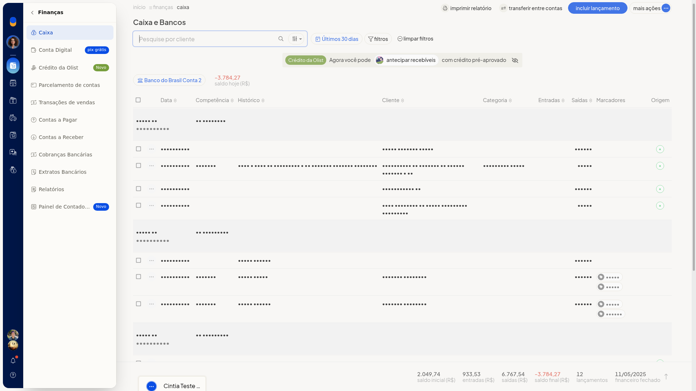
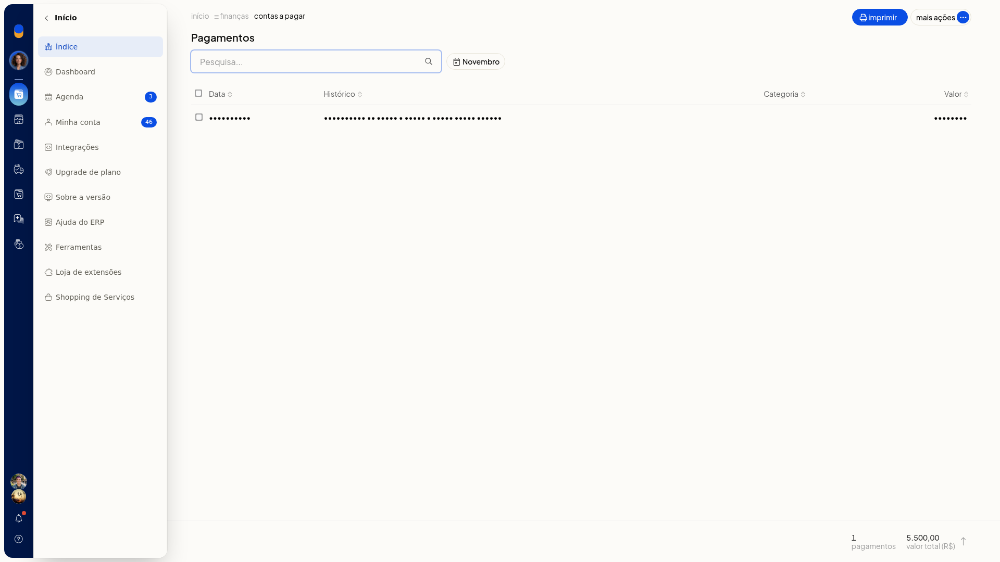
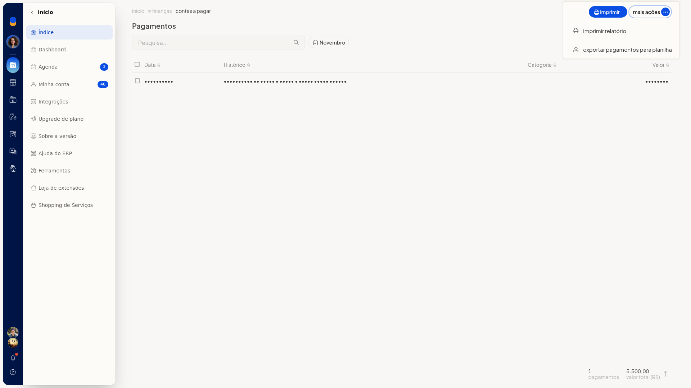

Caixa
No Caixa do ERP da Olist, a baixa de uma conta a receber ou a pagar aparece como um lançamento da conta financeira. Você reconhece esse lançamento pelo histórico, como baixa de conta vencida ou liquidação de conta a pagar, e pelo vínculo de Origem. A consulta não tem coluna de Status.
Pela Origem, você abre o recebimento ou o pagamento que gerou o lançamento, imprime um relatório ou exporta os registros para planilha. O lançamento de baixa não se altera no Caixa quando vem de um recebimento ou de um pagamento.
Pré-requisitos
- A baixa já precisa existir como lançamento na conta financeira. No Caixa não há botão para dar baixa em conta a receber ou a pagar.
Importante
- Não há coluna de Status na lista do Caixa nem em Recebimentos e Pagamentos abertos pela Origem, e o menu do lançamento de baixa não tem ação de Status.
- O lançamento que vem de um recebimento ou de um pagamento não pode ser alterado. A ficha informa Edição desabilitada. Este lançamento não pode ser alterado pois vem de um recebimento ou pagamento.
- Para abrir o recebimento ou o pagamento, use o controle de Origem do lançamento. Não use a trilha do topo da página como caminho.
- Lançamentos do caixa até a data do fechamento financeiro ficam bloqueados.
Instruções
-
Acesse Finanças > Caixa.
-
Na conta financeira aberta, localize o lançamento de baixa pelo histórico.
-
Abra o menu da linha. As ações são Editar, Imprimir recibo, Alterar conta e Marcadores.

-
Localize o controle de Origem, o ícone com a letra B.
-
No lançamento com histórico de baixa de conta a receber, clique em Origem.
-
Consulte o recebimento em Recebimentos, nas colunas Data, Histórico, Categoria e Valor.
-
Clique em Mais ações e use Imprimir relatório ou Exportar recebimentos para planilha.
-
Marque a caixa de seleção para ver a quantidade selecionada, Excluir recebimentos e, no rodapé, o valor selecionado, a quantidade de recebimentos e o valor total.

-
No lançamento com histórico de liquidação de conta a pagar, clique em Origem.
-
Consulte o pagamento em Pagamentos, nas colunas Data, Histórico, Categoria e Valor. A tela também traz pesquisa, seletor de mês, Imprimir e Mais ações.

- Clique em Mais ações e use Imprimir relatório ou Exportar pagamentos para planilha para levar os registros a uma planilha.

- Marque a caixa de seleção para ver a quantidade, Excluir pagamentos e, no rodapé, o valor selecionado, a quantidade de pagamentos e o valor total.

- No lançamento de baixa, abra o menu da linha e clique em Editar.
- Leia a mensagem de edição desabilitada nas abas Dados do lançamento, Competência, Anexos e Marcadores e clique em Voltar para retornar à lista. A baixa permanece no Caixa e não se corrige por essa ficha.

Resultado
O lançamento de baixa fica visível no Caixa, com histórico de baixa ou liquidação e controle de Origem. A Origem abre Recebimentos ou Pagamentos com o registro correspondente, sem coluna de Status. A edição do lançamento exibe a mensagem de edição desabilitada.
Informações adicionais
- Nas listas de Recebimentos e Pagamentos abertas pela Origem não há opção de importar planilha nem de ativar integração para consultar ou lançar a baixa.